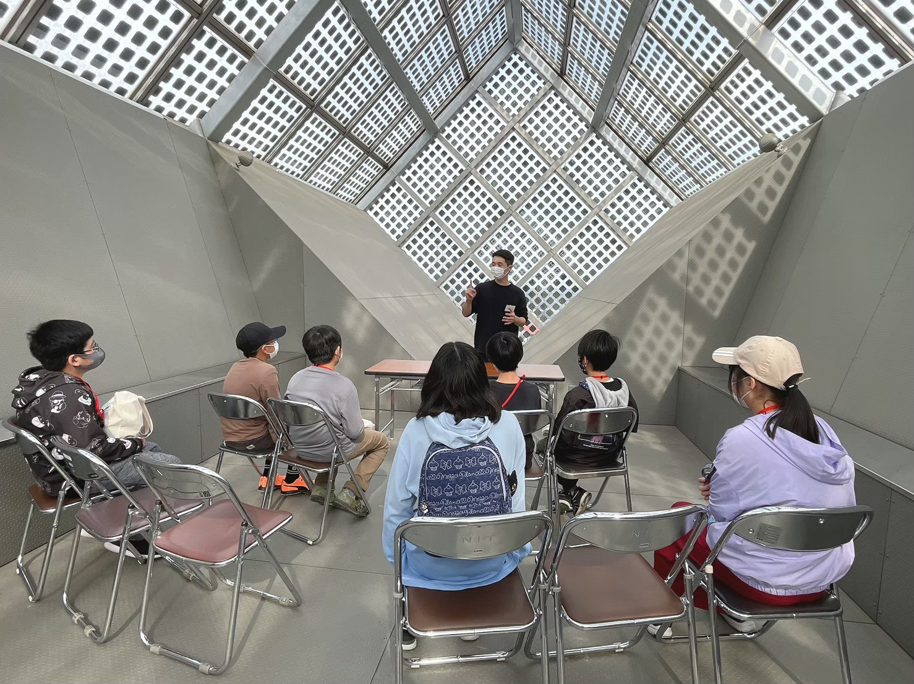
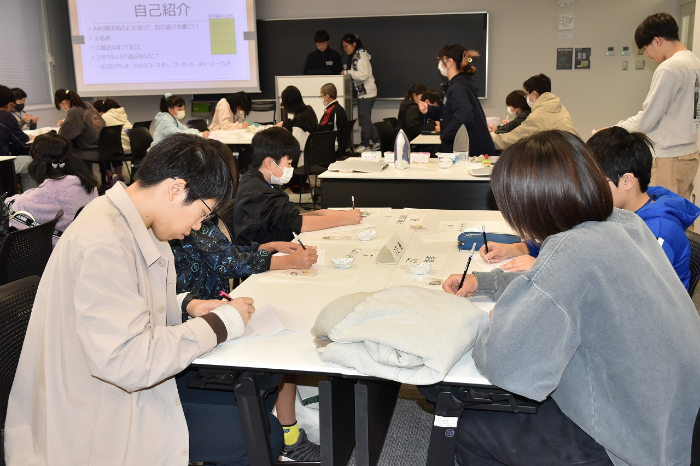

子ども大学


子ども大学とは
日本工業大学と宮代町、企業・団体が連携して、地域の小学生達の知的好奇心を刺激する学びの機会を提供する企画です。 小学生達に、環境問題・SDGsについて興味を持ってもらい、大学生も改めて環境問題を学び、企画の運営・発表をする機会を設けています。
子ども大学での活動
大学生メンバーと地域の小学生がSDGsを、大学内にある太陽光発電・騒音測定・浄化施設を通して、私たちの暮らしと将来にどのように関係するのか共に学んでいく。 海洋プラスチック問題を講義とレジンを使った工作で学ぶ。